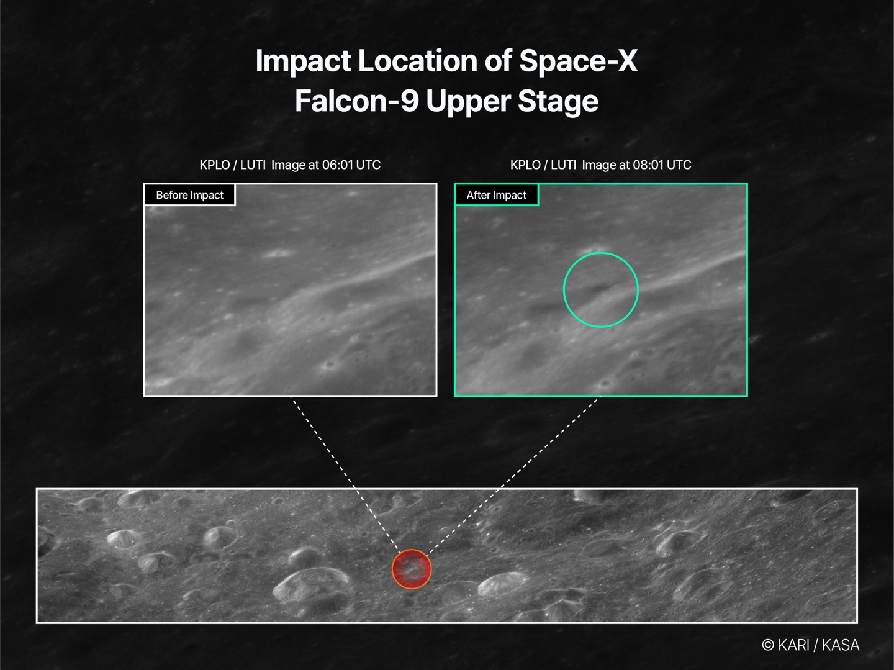
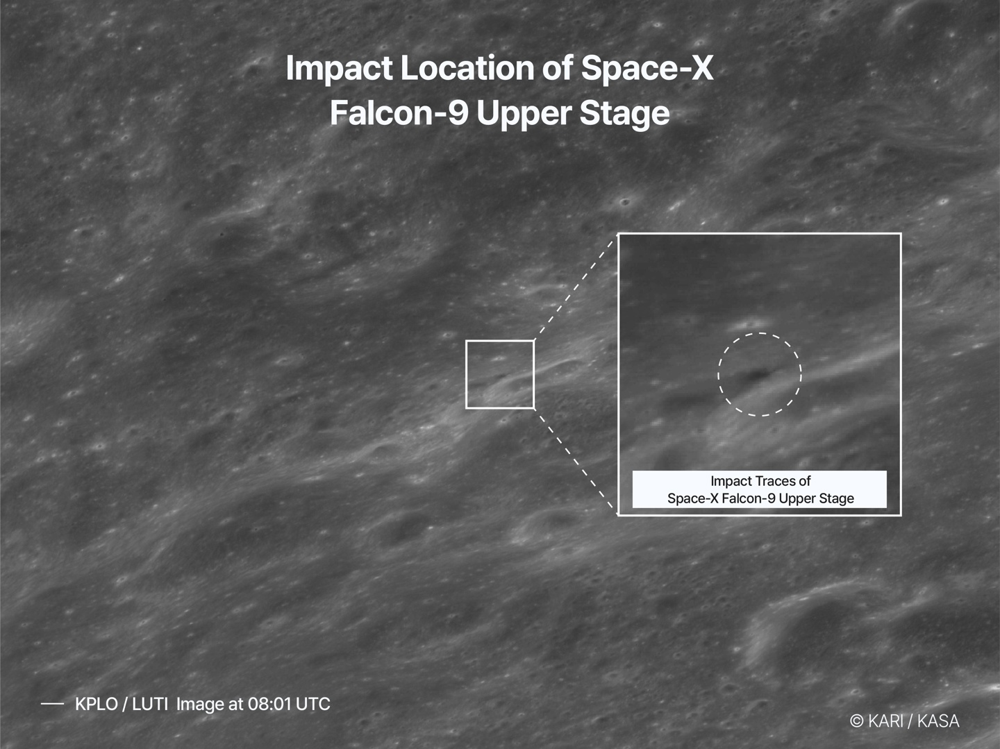

사건 개요
IT홈의 보도에 따르면, 2026년 8월 5일 SpaceX의 Falcon 9 로켓 상단이 달에 충돌했습니다. 많은 천문학자가 이 사건을 주시해 왔으나, 실제 충돌 과정이나 충돌 지점을 촬영한 이미지는 많지 않았습니다. 그러나 최근 한국의 달 탐사선이 관련 이미지를 공개하며 로켓 충돌 후 남겨진 흔적을 보여주었습니다.
로켓 경로 및 충돌 상황
해당 Falcon 9 로켓은 2025년 1월 15일에 발사되었으며, Firefly Aerospace의 Blue Ghost 1 달 착륙선을 달로 운송하는 임무를 수행했습니다. 하지만 태양풍과 중력 등의 영향으로 인해 로켓 상단이 달 근처 궤도를 벗어나지 못하고 계속해서 달 주위를 돌게 되었습니다. 결국 약 18미터 길이의 이 로켓 상단은 2026년 8월 5일, 시속 약 5,400마일(약 8,700km/h)의 속도로 달에 충돌했습니다.
다누리 촬영 및 분석
충돌 지점이 지구에서 직접 관측될 수 없기 때문에, 한국항공우주연구원(KARI)의 다누리(Danuri) 달 궤도선이 충돌 지점을 통과하며 여러 각도에서 촬영한 사진을 확보했습니다.
해당 이미지들을 통해 로켓이 달에 충돌한 후 해당 영역이 더 어두워졌으며, 새로운 운석 구덩이가 형성된 것을 확인할 수 있습니다. 또한 충돌로 인해 대량의 달 먼지가 발생했으나, 현재 공개된 이미지에는 이 먼지들이 포함되어 있지 않습니다.
향후 계획
NASA는 앞서 달 탐사 궤도선(LRO)이 다음 주에 충돌 지점을 비행하며 이번 충돌의 영향을 추가로 조사할 것이라고 발표했습니다. 이는 천문학자들에게 새로운 정보를 제공하며, 특히 향후 달 탐사 임무 계획과 연구에 도움이 될 것으로 기대됩니다.
총평
SpaceX의 Falcon 9 로켓 상단이 2026년 8월 5일 달에 충돌하여 새로운 운석 구덩이를 형성했습니다. 한국의 다누리 탐사선이 촬영한 이미지를 통해 충돌 흔적이 확인되었으며, 향후 NASA의 LRO가 추가 조사를 진행할 예정입니다.
SpaceX Falcon 9 上层级撞击月球
2026 年 8 月 5 日，一枚 SpaceX Falcon 9 火箭的上面级撞击了月球。该火箭于 2025 年 1 月 15 日发射，原计划为 Firefly Aerospace 的 Blue Ghost 1 月球着陆器提供运输服务。由于太阳风和引力等因素影响，上层级未能脱离月球轨道，最终以高速撞击月面。
撞击相关参数
- 火箭上层级长度：约 18 米
- 撞击速度：约 5,400 英里/小时（约 8,700 公里/小时）
影像观测与后续研究
由于撞击地点无法从地球直接观测，韩国航空宇宙研究院（KARI）的 Danuri 月球轨道器在飞越该区域时拍摄了多角度图像。影像显示，撞击点形成了新的陨石坑并导致局部区域变暗。此外，NASA 的月球勘测轨道飞行器（LRO）计划于下周对该地点进行进一步研究，以评估此次碰撞对未来月球探测任务的影响。
总结
SpaceX Falcon 9 上层级因轨道异常在 2026 年 8 月撞击月球。韩国 Danuri 探测器捕捉到了由此产生的陨石坑和变暗区域，而 NASA 的 LRO 将在随后进行更深入的科学研究。
事件の概要
ITホームの報道によると、2026年8月5日、SpaceXのFalcon 9ロケットの上段部が月に衝突しました。多くの天文学者がこの事象を注視していましたが、実際の衝突過程や衝突地点を捉えた画像は多くありませんでした。しかし最近、韓国の月探査機が関連画像を公開し、ロケット衝突後に残された痕跡を明らかにしました。
ロケットの軌道および衝突状況
当該Falcon 9ロケットは2025年1月15日に打ち上げられ、Firefly AerospaceのBlue Ghost 1月着陸機を月に運ぶ任務を遂行していました。しかし、太陽風や重力などの影響により、ロケット上段部が月の近傍軌道を外れ、月周辺を回り続けることとなりました。最終的に、約18メートルもの長さを持つこのロケット上段部は、2026年8月5日に時速約5,400マイル（約8,700km/h）の速度で月に衝突しました。
- 打ち上げ日：2025年1月15日
- ロケット上段部の長さ：約18メートル
- 衝突時の速度：時速約5,400マイル（約8,700km/h）
ダヌリによる撮影および分析
衝突地点は地球から直接観測することができないため、韓国航空宇宙研究院（KARI）の月周回衛星「ダヌリ（Danuri）」が衝突地点を通過する際に複数の角度から撮影した写真を確保しました。
これらの画像を通じて、ロケットが月に衝突した後、該当領域がより暗くなり、新たな隕石クレーターが形成されたことが確認できます。また、衝突により大量の月の塵が発生しましたが、現在公開されている画像にはこれらの塵は含まれていません。
今後の計画
NASAは先日、月探査軌道線（LRO）が来週この衝突地点を飛行し、今回の衝突の影響をさらに調査すると発表しました。これは天文学者により新たな情報を提供し、特に今後の月探査ミッションの計画や研究に役立つことが期待されています。
まとめ
SpaceXのFalcon 9ロケット上段部が2026年8月5日に月に衝突し、新たなクレーターを形成しました。韓国のダヌリ探査機が撮影した画像によってその痕跡が確認され、今後はNASAのLROによる詳細な追加調査が行われる予定です。
Incident Overview
According to a report by IT Home, the upper stage of a SpaceX Falcon 9 rocket collided with the Moon on August 5, 2026. While many astronomers had been monitoring this event, there were few images capturing the actual collision process or the specific impact site. However, a Korean lunar orbiter recently released images showing the traces left behind by the rocket's collision.
Rocket Path and Collision Details
The Falcon 9 rocket was launched on January 15, 2025, to transport Firefly Aerospace's Blue Ghost 1 lunar lander. Due to the influence of solar winds and gravity, the upper stage failed to exit its orbit near the Moon and continued to circle it. Ultimately, this approximately 18-meter-long rocket upper stage collided with the Moon on August 5, 2026, at a speed of about 5,400 mph (approximately 8,700 km/h).
Danuri Imaging and Analysis
Since the impact site could not be observed directly from Earth, Korea Aerospace Research Institute (KARI)'s Danuri lunar orbiter captured images from multiple angles as it passed over the collision site.
The following details were confirmed through these images:
- The area became darker after the rocket's impact.
- A new crater was formed at the site.
- Large amounts of lunar dust were generated, though they are not visible in the currently released images.
Future Plans
NASA has announced that its Lunar Reconnaissance Orbiter (LRO) will fly over the impact site next week to further investigate the effects of the collision. This is expected to provide new information for astronomers and assist in planning future lunar exploration missions and research.
Summary
The upper stage of a SpaceX Falcon 9 rocket struck the Moon on August 5, 2026, creating a new crater at the impact site. Images captured by Korea's Danuri orbiter confirmed the collision traces, and NASA’s LRO is scheduled to conduct further investigations into the area.

